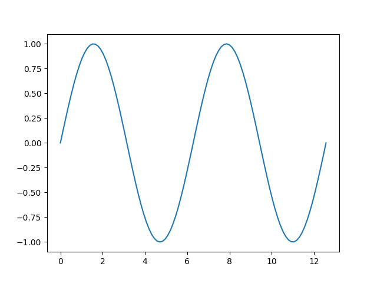

Note
Click here to download the full example code
Placeholder for example¶
This example is a placeholder that uses the sphinx-gallery syntax for creating examples
import aurora
import numpy as np
import matplotlib.pyplot as plt
Step 1¶
Some description of what we are doing in step one
Step 2¶
Plot it
fig, ax = plt.subplots(1, 1)
ax.plot(x, y)

[<matplotlib.lines.Line2D object at 0x7fd6dd2130d0>]
Total running time of the script: ( 0 minutes 0.104 seconds)